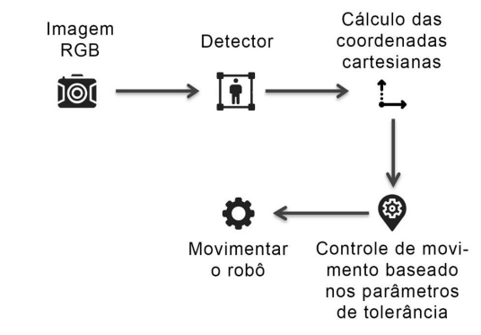
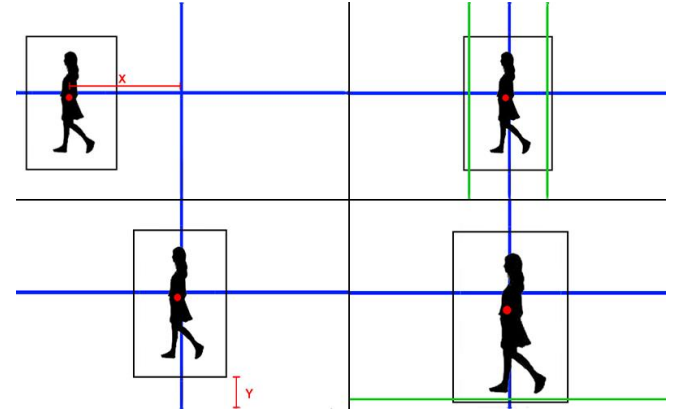

Sistema robótico com capacidade de reconher e seguir um usuário.
Neste projeto foi desenvolvido um sistema robórico capaz de seguir um usuário. Para isso utilizou-se Visão Computacional e Machine Learning. O protótipo apresentado no vídeo é pequeno, entretanto o método desenvolvido pode ser aplicado em robôs maiores para serem usados para carregar bagagens e/ou outras coisas pesadas, assim como auxiliar pessoas com deficiência física.
Funcionamento
Ao passar a imagem RGB no modelo e uma pessoa ser detectada, é retornado a coordenada cartesiana da caixa delimitadora. Para que sejam feitas as estimativas e correções, é calculada a centroide com os valores obtidos.

O controle de movimento é feito a partir de um mecanismo de acionamento diferencial. Esse sistema é baseado em parâmetros definidos previamente, e que podem ser ajustados de acordo as necessidades do usuário, estes preceitos serão chamados de tolerância.
Quando o usuário estiver fora do limite definido como tolerável, serão feitos ajustes no movimento do robô para que os valores da centroide esteja dentro dos parâmetros estabelecidos, para facilitar o entendimento esse processo foi ilustrado a baixo, as linhas verdes são os limites determinados anteriormente.

Para controle de quando seguir em frente ou parar, o Y final é utilizado como base. Quando esta coordenada estiver acima dos parâmetros estabelecidos, o robô andará até o Y final ficar a baixo da tolerância.
O manuseio de curvas é feito com base nos parâmetros relacionados ao eixo X. O posicionamento do usuário será estimado utilizando a média entre o X inicial e final, este valor será comparado com os parâmetros de tolerância, caso seja maior o robô virará à esquerda e caso seja menor o robô virará à direita, esses movimentos serão feitos até que a centroide esteja dentro da projeção estipulada.